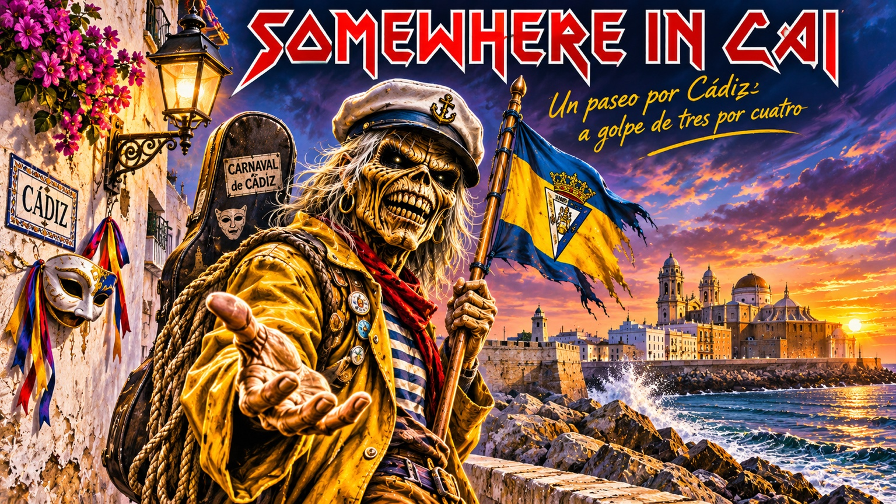

Somewhere in Cai
Un paseo por Cádiz a golpe de tres por cuatro.

El paseo
¿Cómo se juega? Elige una parada y toca o haz clic directamente sobre los detalles de la ilustración. Algunos esconden coplas y otros, colecciones de Carnaval.
¿No encuentras nada? Pulsa «Dame una pista» para ver los escondites. Cada descubrimiento se guarda en tu recorrido. ¡A ver cuántos encuentras!